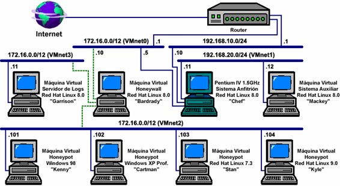

Honeynets Virtuales
¿Que son?
Una honeynet virtual es una red de señuelos contenida completamente en un único ordenador mediante la utilización de software de virtualización. Estas herramientas permiten la ejecución simultánea de varios sistemas operativos en un único equipo físico de modo que, pese a compartir los recursos del sistema anfitrión, aparenten estar corriendo en máquinas distintas e indepen- dientes. Este software es capaz de albergar los sistemas operativos más extendidos, alcanzando un rendimiento cada vez más cercano al que se consigue sobre máquinas físicas.
Estas redes virtuales no constituyen una Tercera Generación de honeynets pues se basan en las mismas ideas e incluso pueden replicar las arquitecturas de Primera o Segunda Generación. Sin embargo, el empleo de estas herramientas de virtualización ofrece un conjunto de ventajas e implica una serie de limitaciones para el diseño de honeynets que incidirán en su arquitectura final y la apartarán de los modelos explicados anteriormente.
Ventajas de la virtualización
Aunque cada herramienta de virtualización presenta sus propias características y peculiaridades, hay una serie de cualidades que son comunes a todas ellas. El empleo de este software para el desarrollo de honeynets ofrece las si- guientes ventajas frente a los modelos clásicos:
-
Sólo se precisa de una máquina física, que funciona como anfitriona de la red virtual. Esto se traduce en una disminución significativa del coste del hardware y el espacio requerido por la honeynet.
-
Permite administrar todos los sistemas de la honeynet de modo centralizado desde el equipo anfitrión.
-
El hecho de que todo se ejecute en un único equipo convierte una honeynet en una solución “plug-and-play”.
-
Los discos duros de los distintos sistemas pueden ser virtuales, es decir, archivos en el sistema anfitrión. Si cada vez que se instala y configura correctamente un sistema se guarda una copia de seguridad, cuando se quiera re- cuperar una máquina atacada o se quiera sustituir un sistema por otro bastará con reemplazar los ficheros del sistema a sustituir por la copia de seguridad almacenada.
Desventajas de la virtualización
Sin embargo, no todo son ventajas. Este tipo de honeynet presenta también algunos inconve- nientes frente a los modelos clásicos:
-
La utilización de software de virtualización limita la variedad de sistemas operativos que pueden constituir una honeynet a los soportados por la herramienta. Asimismo, para la generación de la red virtual sólo se podrán utilizar aquellos componentes de red que la herramienta de virtualización sea capaz de simular, que generalmente serán switches.
-
El hecho de que toda la honeynet se ejecute sobre un único equipo lo convierte en el talón de Aquiles de la arquitectura.
-
El empleo de herramientas de virtualización introduce ciertas peculiaridades en las máquinas virtuales que pueden delatar la utilización de este tipo de software. El hecho de que un sistema sea virtual no implica que se trate de un honeypot, pero puede hacer que el intruso pierda su interés en la máquina.
-
Si bien existen alternativas de código abierto que no requieren desembolso alguno, la licencia de utilización de las herramientas de virtualización puede ser costosa.